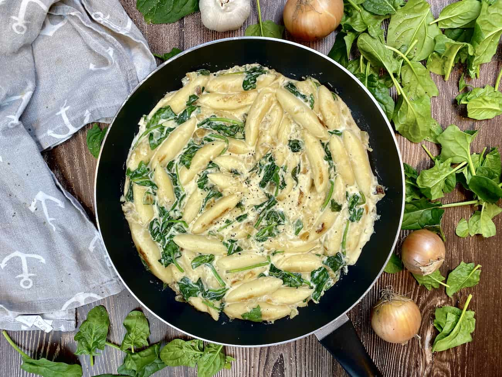

<div onclick="closeDropdown()">

    <div class="main-div">
        <h1>Cremige Schupfnudeln mit Spinat</h1>
        
        <div class="small-icons-parent">
            <div class="small-icons-child">
                
                <span>15 Min.</span>
            </div>
            <div class="small-icons-child">
                
                <span>einfach</span>
            </div>
            <div class="small-icons-child">
                
                <span>28.10.2022</span>
            </div>
        </div>
        <hr>
        <div class="inputDiv">
            <span>Zutaten für</span>
            <input onkeyup="resetInput()" type="number" id="myInput" placeholder="Mind. 1 Portion" value="1" min="1">
            <button onclick="calculate()">Portionen</button>
        </div>

        <table>
            <tbody id="table"></tbody>
        </table>

        <h2>Zubereitung</h2>
        <div class="small-icons-parent">
            <div class="small-icons-child d-none">
                
                <span>ca. 15 Minuten</span>
            </div>
            <div class="small-icons-child small-icons-child-extra">
                
                <span>Gesamtzeit ca. 15 Minuten</span>
            </div>
        </div>
        <ul>
            <li>Hacken Sie den Knoblauch klein und würfeln Sie die Zwiebeln.</li> <br>
            <li>Erhitzen Sie nun eine Pfanne und braten den Knoblauch und die Zwiebeln zusammen kurz scharf an.</li>
            <br>
            <li>Geben Sie anschließend die Schupfnudeln hinzu und braten alles etwa 5 Minuten lang goldgelb an.</li>
            <br>
            <li>Schalten Sie nun die Hitze runter und geben Frischkäse, Milch und Cremefine hinzu.</li> <br>
            <li>Verrühren Sie alles ordentlich bei mittlerer Hitze, bis eine cremige Soße entstanden ist.</li> <br>
            <li>Geben Sie nun den Spinat hinzu und rühren diesen unter. Zum Schluss schmecken Sie alles nach Belieben
                mit</li> <br>
            <li>Salz und Pfeffer ab.</li> <br>
            <li>Nun können Sie die Schupfnudeln warm servieren.</li> <br>
            <li>Guten Appetit!</li> <br>
        </ul>
        <h3>Rezept erstellt von: </h3>
        <div class="author">
             <b> Johannes </b>
        </div>
    </div>

</div>